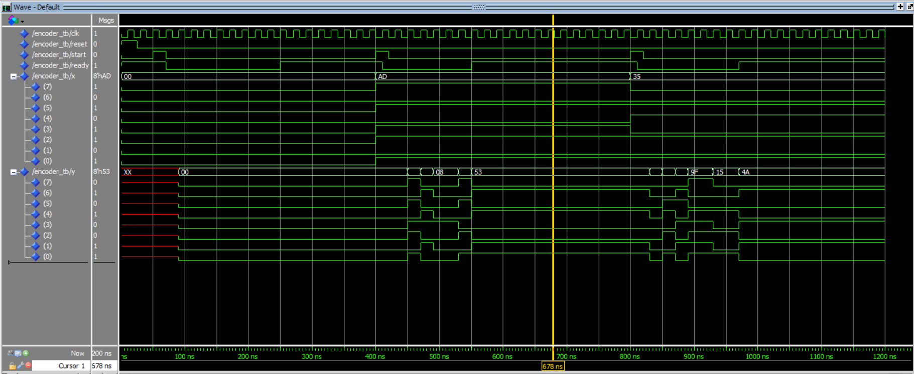

Encryption algorithm

This piece of code simulates encryption hardware. It takes in an 8-bit binary input and encrypts it in a certain number of clock cycles which is dependent on the input. It uses the data path control model, which means that the hardware consists of a finite state machine, an arithmetic-logic unit and an 8-bit register. In the image above the 8 bits under '8'hAD' are the input signal and the 8 bits under '8'h53 are the output signal. The computation is happening when all the output bits are changing rapidly.
Take a look at the code here:
LIBRARY IEEE;
USE IEEE.std_logic_1164.ALL;
PACKAGE delta_defs IS
TYPE std_logic_array IS
ARRAY (natural RANGE <>) OF std_logic_vector (7 DOWNTO 0);
FUNCTION b2n(b: std_logic)
RETURN natural;
FUNCTION s2n(v: std_logic_vector)
RETURN natural;
FUNCTION n2s(n: natural; length: natural)
RETURN std_logic_vector;
END delta_defs;
PACKAGE BODY delta_defs IS
FUNCTION b2n(b: std_logic)
RETURN natural IS
VARIABLE result: natural := 0;
BEGIN
IF b = '1' THEN
result := 1;
END IF;
RETURN result;
END b2n;
FUNCTION s2n(v: std_logic_vector)
RETURN natural IS
VARIABLE result: natural := 0;
BEGIN
FOR i IN v'range LOOP
result := result * 2;
IF v(i) = '1' THEN
result := result + 1;
END IF;
END LOOP;
RETURN result;
END s2n;
FUNCTION n2s(n: natural; length: natural)
RETURN std_logic_vector IS
VARIABLE result: std_logic_vector (length-1 DOWNTO 0);
VARIABLE copy: natural;
BEGIN
copy := n;
FOR i IN 0 TO length-1 LOOP
IF copy MOD 2 = 1 THEN
result(i) := '1';
ELSE
result(i) := '0';
END IF;
copy := copy / 2;
END LOOP;
RETURN result;
END n2s;
END delta_defs;
LIBRARY IEEE;
USE IEEE.std_logic_1164.ALL;
ENTITY reg IS
PORT
(
reg_clk:IN std_logic;
reg_d: IN std_logic_vector (7 DOWNTO 0);
reg_q: OUT std_logic_vector (7 DOWNTO 0)
);
END reg;
ARCHITECTURE reg_arch OF reg IS
BEGIN
PROCESS (reg_clk)
BEGIN
IF (reg_clk'event AND reg_clk = '1') THEN
reg_q <= reg_d;
END IF;
END PROCESS;
END reg_arch;
LIBRARY IEEE;
USE IEEE.std_logic_1164.ALL;
USE WORK.delta_defs.ALL;
ENTITY alu IS
PORT
(
alu_clk:IN std_logic;
alu_op: IN std_logic_vector (2 DOWNTO 0);
alu_x0: IN std_logic_vector (7 DOWNTO 0);
alu_x1: IN std_logic_vector (7 DOWNTO 0);
alu_y: OUT std_logic_vector (7 DOWNTO 0);
alu_c: OUT std_logic
);
END alu;
ARCHITECTURE alu_arch OF alu IS
SIGNAL o2,o1,o0,c: std_logic;
BEGIN
WITH alu_op SELECT
alu_y <=alu_x0 WHEN "000",
alu_x1 WHEN "111",
"00000000" WHEN "001",
"00000000" WHEN "010",
n2s(s2n(alu_x0) +
s2n(alu_x1) +
b2n(c),8) WHEN "011",
alu_x0 XOR alu_x1 WHEN "100",
alu_x0 AND alu_x1 WHEN "101",
"00000000" WHEN OTHERS;
o2 <= alu_op(2);
o1 <= alu_op(1);
o0 <= alu_op(0);
PROCESS (alu_clk)
BEGIN
IF (alu_clk'event AND alu_clk = '1') THEN
IF ((o2 = '0') AND (o1 = '1') AND (o0 = '0')) OR
((o2 = '0') AND (o1 = '1') AND (o0 = '1') AND
(s2n(alu_x0)+s2n(alu_x1)+b2n(c) < 256)) THEN
c <= '0';
ELSIF ((o2 = '0') AND (o1 = '0') AND (o0 = '1')) OR
((o2 = '0') AND (o1 = '1') AND (o0 = '1') AND
(s2n(alu_x0)+s2n(alu_x1)+b2n(c) > 255)) THEN
c <= '1';
END IF;
END IF;
END PROCESS;
alu_c <= c;
END alu_arch;
LIBRARY IEEE;
USE IEEE.std_logic_1164.ALL;
USE WORK.delta_defs.ALL;
ENTITY encoder IS
PORT
(
clk: IN std_logic;
reset: IN std_logic;
start: IN std_logic;
x: IN std_logic_vector (7 DOWNTO 0);
y: OUT std_logic_vector (7 DOWNTO 0);
ready: OUT std_logic
);
END encoder;
ARCHITECTURE encoder_arch OF encoder IS
COMPONENT reg
PORT
(
reg_clk:IN std_logic;
reg_d: IN std_logic_vector (7 DOWNTO 0);
reg_q: OUT std_logic_vector (7 DOWNTO 0)
);
END COMPONENT;
COMPONENT alu
PORT
(
alu_clk:IN std_logic;
alu_op: IN std_logic_vector (2 DOWNTO 0);
alu_x0: IN std_logic_vector (7 DOWNTO 0);
alu_x1: IN std_logic_vector (7 DOWNTO 0);
alu_y: OUT std_logic_vector (7 DOWNTO 0);
alu_c: OUT std_logic
);
END COMPONENT;
component fsm
port (
start : in STD_logic;
clk : in STD_logic;
reset : in STD_logic;
y : in std_logic_vector (7 downto 0);
c : in std_logic;
ready : out std_logic;
op : out std_logic_vector (2 downto 0)
);
end component;
SIGNAL reg_in: std_logic_vector (7 DOWNTO 0);
SIGNAL reg_out: std_logic_vector (7 DOWNTO 0);
SIGNAL op: std_logic_vector (2 DOWNTO 0);
SIGNAL c:std_logic;
BEGIN
lbl_alu: alu PORT MAP (
alu_clk => clk,
alu_op => op,
alu_x0 => x,
alu_x1 => reg_out,
alu_y => reg_in,
alu_c => c);
lbl_reg: reg PORT MAP (
reg_clk => clk,
reg_d => reg_in,
reg_q => reg_out);
lbl_fsm: fsm PORT MAP (
clk => clk,
reset => reset,
start => start,
c => c,
y => reg_out,
op => op,
ready => ready
);
y <= reg_out;
END encoder_arch;
library IEEE;
use IEEE.std_logic_1164.all;
use IEEE.numeric_std.ALL;
entity fsm is
port(
clk : in std_logic;
reset : in std_logic;
start : in std_logic;
c : in std_logic;
y : in std_logic_vector (7 downto 0);
ready : out std_logic;
op : out std_logic_vector (2 downto 0)
);
end entity fsm;
architecture behavioural of fsm is
type c_state is ( st_reset,
st_1_clr,
st_2_pass,
st_3_add,
st_4_pass,
st_5a_pass,
st_5b_add,
st_6a_and,
st_6b_xor,
st_7_add
);
signal st, n_st : c_state;
begin
process (clk)
begin
if (rising_edge(clk)) then
if (reset = '1') then
st <= st_reset;
else
st <= n_st;
end if;
end if;
end process;
process(st, reset, start, c, y)
begin
case st is
when st_reset =>
if (reset = '0' and start = '1')
then n_st <= st_1_clr;
else
n_st <= st_reset;
end if;
ready <= '1';
op <= "111";
when st_1_clr =>
n_st <= st_2_pass;
ready <= '0';
op <= "010";
when st_2_pass =>
n_st <= st_3_add;
ready <= '0';
op <= "000";
when st_3_add =>
n_st <= st_4_pass;
ready <= '0';
op <= "011";
when st_4_pass =>
if (c = '0')
then n_st <= st_5a_pass;
else n_st <= st_5b_add;
end if;
ready <= '0';
op <= "111";
when st_5a_pass =>
if (unsigned(y) <= 63)
then n_st <= st_6a_and;
else n_st <= st_6b_xor;
end if;
ready <= '0';
op <= "111";
when st_5b_add =>
n_st <= st_5a_pass;
ready <= '0';
op <= "011";
when st_6a_and =>
n_st <= st_7_add;
ready <= '0';
op <= "101";
when st_6b_xor =>
n_st <= st_7_add;
ready <= '0';
op <= "100";
when st_7_add =>
n_st <= st_reset;
ready <= '0';
op <= "011";
end case;
end process;
end architecture behavioural;